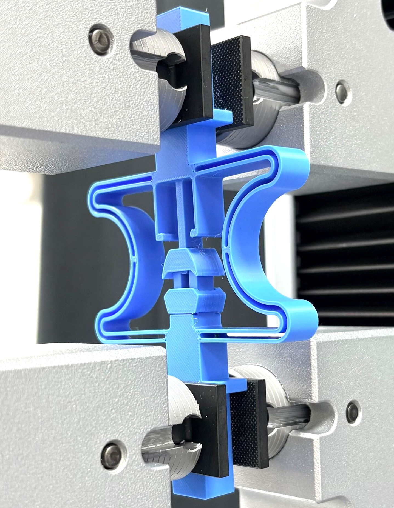

01 / SNAP-BACK
Programmable multifunctional metamaterials
Mechanical reconfiguration as a route to programmable functionality and state-dependent response.
Nonlinear mechanics
Reconfiguration
Additive manufacturing